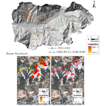

Bruno Raimbault - Information Systems Engineer - Public work
E-m@il: raimbault.bruno@gmail.com - LinkedIn: @braimbault - Github: braimbault
MSF Dashboard - Surveillance
[April 2016] Dashboard for Medical Surveillance Data visualisation. Live example: Tonkolili District, Sierra Leone. Read about the MSF-Dashboard library here. Built with dc.js, leaflet.js and others. @MSF-UK
MSF Dashboard - Outbreak
[March 2016] Dashboard for Medical Outbreak Data visualisation. Live example: Lubumbashi, DRC. Read about the MSF-Dashboard library here. Built with dc.js, leaflet.js and others. @MSF-UK
Ethiopia RCS - Mapfolio

[December 2015] Browse the maps produced to support the Ethiopia RCS during the Drought Emergency Assessment. Built from the American Red Cross mapfolio tweaked to use Dropbox as a backend. @BritishRedCross
Ethiopia RCS - DHIS

[November 2015] Simple Dashboard for Medical Surveillance Data visualisation. Built with dc.js and leaflet.js. @BritishRedCross
Nepal RCS - SitRep
[June 2015] Dashboard to publish Situational Reports (SitRep) for the Nepal Red Cross Society (RCS) after April 2015 EQ. Built with leaflet.js. @BritishRedCross
Python for GIS
Here are presented some of the scripts I wrote in Python to automate tasks in GIS software: QGIS, jOSM...
WASH in HCF

[May 2015] WAter, Sanitation and Hygiene coverage in Health Care Facilities in Low and Middle Income Countries - (WHO report) published in 2015. Built with leaflet.js.
Interactive CV (not maintained)

[January 2015] Browse and find more details on my Information System Engineer career track and education from 2006 until now. Built with amCharts.js and WordPress.
ALICE - Contribution
[June 2012] Quantitative approach to landslide hasard. Built with VBA and SQL for MapInfo and Python for ArcGIS. @BRGM
Hydraccess - Contribution

[January 2011] Hydrological data management and analysis software. Built with VBA and SQL for MS Access. @IRD
More soon...

More samples of my work will be displayed soon.